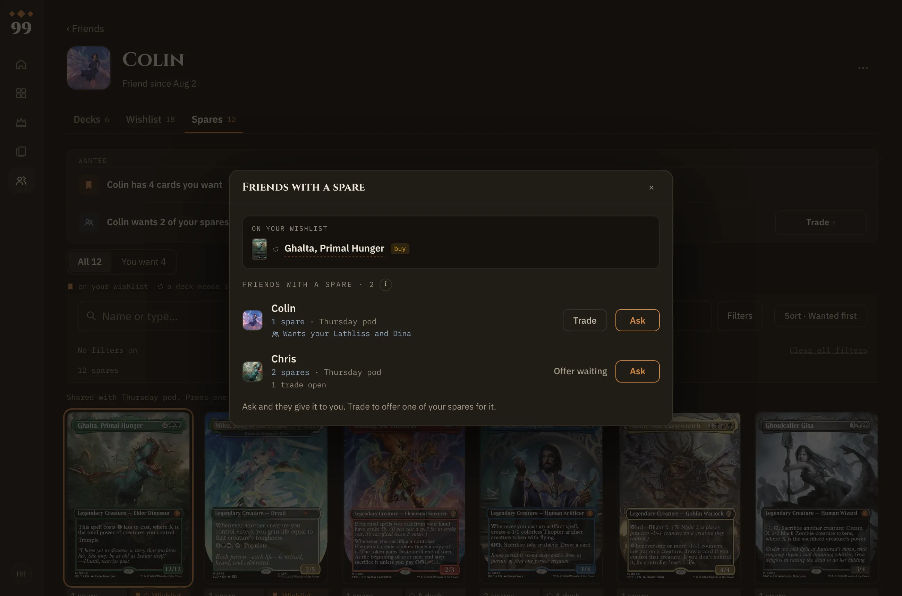
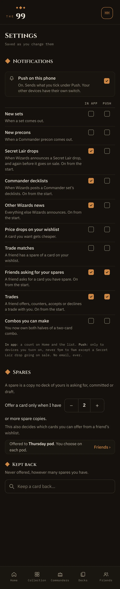
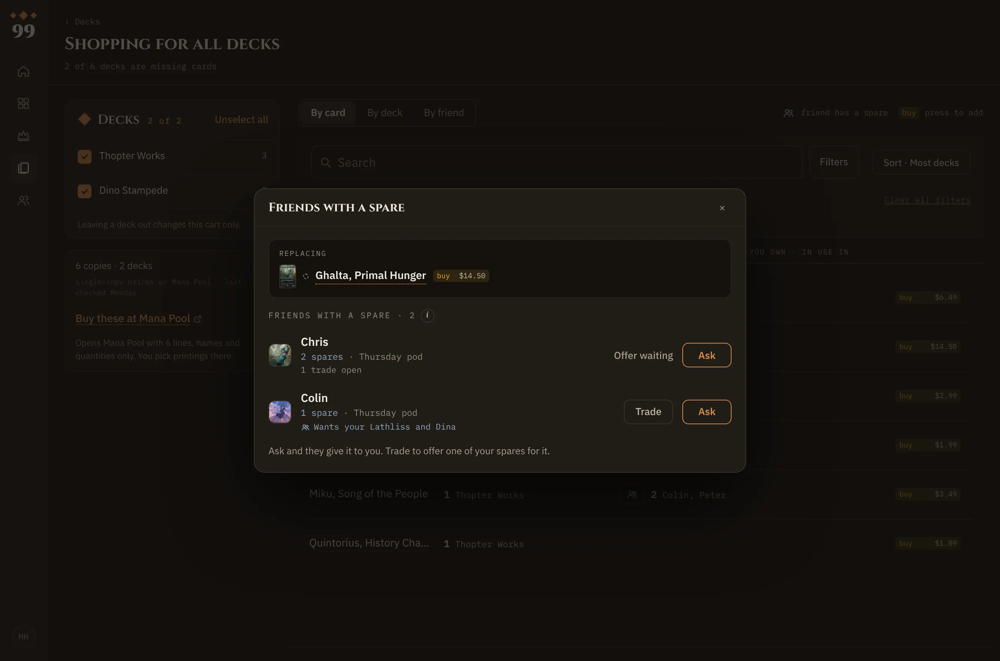
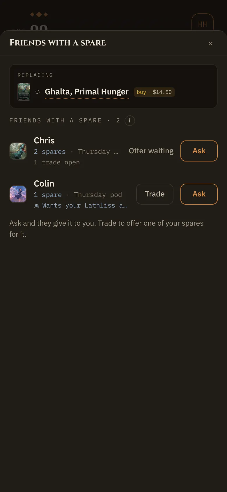

HANDOFF · 2026-11-27
Asking for a spare stays first
Pressing a tile opens the shipped spares sheet. Ask stays the primary press; Trade sits beside it, quiet (outline), with the how-line 'Ask and they give it to you. Trade to offer one of your spares for it.' A friend you already have an unanswered offer with shows 'Offer waiting' in place of Trade. The same sheet opens from a deck or All shopping.
S1 · Press a spare on Colin's tab
Colin: Trade, Ask. The 'wants your Lathliss' line uses the spare glyph in fact ink.
S1 · DESKTOP

S1 · PHONE

D1 · The same sheet from All shopping
Colin: Trade, Ask. Chris: Offer waiting, Ask.
D1 · DESKTOP

D1 · PHONE
